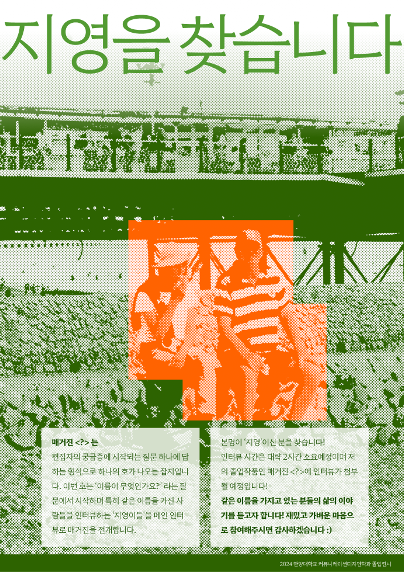
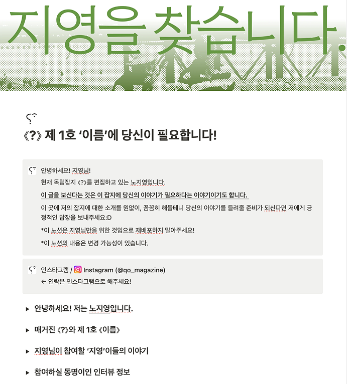
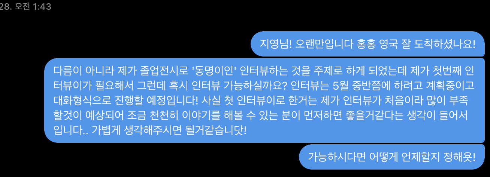

03. 우연한 만남이 필연적인 연결로.
진행과정
진행하는 과정은 마치 여행과 같았다. 한 치 앞을 계획할 수 없는 게릴라의 연속이었다.
1. 지영을 찾아서
‘영국'에서 한국 이름을 찾아야하는 어려운 상황에 최대한 여러가지 다양한 방법을 사용해 인터뷰이인 ‘지영'을 섭외했다.

→ 지영을 찾습니다. 포스터
인스타그램 속 ‘지영'을 수집하고 포스터와 노션페이지를 함께 DM으로 보냈다.

→ 지영을 찾습니다. 노션페이지
자신의 깊은 이야기까지 해야하는 인터뷰 특성상 사람들이 거부감을 조금이라도 덜 느끼게 하기 위해 자세한 설명을 적어둔 노션 페이지를 제작했다.

→ 오프라인 지영 섭외
파리 여행 중 우연히 만난 ‘지영’을 인터뷰이로 섭외하였다.